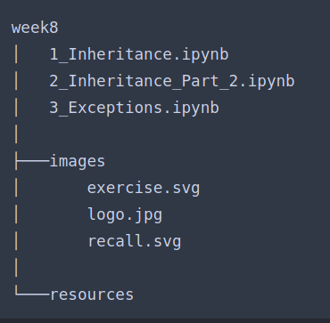

הכוונה בתרגיל היא ליצור את ההיררכיה בעצמנו אני צודק?
הכוונה, לא בהכרח קבצים “קיימים”
2 לייקים
יאפ 
לייק 1
בתרגיל היררכיה יש צורך לממש הדפסה כמו בדוגמה ?
(קצת מסתבך אם יש לנו כמה ספריות אחת בתוך השניה וכו’ )

לא התבקשנו, אם אתה רוצה אתה יכול לעשות את זה.
זו רק דוגמה, לפחות מההבנת הנקרא שאני הבנתי
2 לייקים
עוד שאלה - כשיוצרים קובץ אז השמתמש היוצר מזין מה גודל הקובץ והתוכן שלו? אין צורך לממש באמת מתודה של בדיקת גודל בהתאם לתוכן כמו במערכת קבצים אמיתית?
ואיזה סוג קובץ הוא מחברת?
המחברת היא קובץ ipynb
יותר זריז שתממש מאשר לשאול 
אבל כן, לא חובה לממש כזו
בכוונה האלכסונים בנתיב בתרגיל, הפוכים מנתיב תקין?
נתיב יכול להיות גם עם אלכסונים כאלה, תציצי במחברות קודמות
תודה. בדוגמה במחברת, הנתיב מתחיל באלכסון. ניסיתי גם במחשב לחפש קובץ שמתחיל באלכסון וזה לא אפשרי. האם זן טעות?
את בונה את ההיררכיה של הקבצים, הקבצים לא בהכרח קיימים
בלינוקס הנתיבים נראים קצת אחרת (וקצת יותר הגיוני): השורש הוא /, ומשם יש תיקיות בעץ מסודר. נניח, התיקיות home ו־var שנמצאות ב־root מקבלות את הנתיב /var, /home.
וroot מקבל את הנתיב root/ ?
התיקייה root תקבל את הנתיב /root. אם בתוכה יש תיקייה, נניח logs, היא תקבל את הנתיב /root/logs.
אם בתוך logs יש קובץ שנקרא moishe.txt אז הנתיב יהיה /root/logs/moishe.txt.
2 לייקים
האלכסון משמאל לשם התיקייה מסמנת שהיא מכילה קבצים נוספים.
כן, אפשר להסתכל על זה ככה. שימי לב שגם משמאל ל־moishe.txt יש אלכסון.
אפשר להסתכל על זה גם בצורה הבאה:
- האלכסון הראשון (השמאלי ביותר) זה פשוט תו עוגן שמראה שמדובר שמדובר על עץ תיקיות, והוא מייצג את ראש העץ.
- מיד אחריו יהיה שם של תיקייה או קובץ שנמצאים ב"דרגה" הכי גבוהה של עץ התיקיות.
- אם הקובץ בסעיף 2 הוא תיקייה, ובתוכה יש קבצים נוספים, כשנרצה לציין את הנתיב של הקבצים הנוספים נוסיף את התו
/בין שם התיקייה לבין שם הקובץ כדי להפריד ביניהם (ולסמן עוד “דרגה” פנימית יותר בעץ)
המבנה הזה סופר דומה לזה של Windows רק יותר פשוט. במקום שיהיה בהתחלה “כונן” שבתוכו יש תיקיות וקבצים עם סלאשים, ויתרו על החלק הזה של הכונן וניגשים ישר לתיקיות ולקבצים.
לייק 1
לא ברור לי מהתרגיל - מה אמורים לעשות עם ה path?
2 לייקים
תפתח את זה למה שאתה מבין.
באופן כללי קיבלתי תחושה מהתרגילים האחרונים שיש הרבה יותר חופש מחשבה.
במקרה הזה למשל, תוכל לממש מערכת נתיבים (ים עשה את זה כדוגמה באחת המחברות בעבר).
לייק 1
היי,
קצת הסתבכתי… מה הכוונה ב"ליצור היררכיה"? למדנו לעשות את זה?
האם עלי לכתוב קוד שיוצר תיקיות? קבצים?
אני פשוט הנחתי שהמשתמש מספק לי את הנתיב וכתבתי מחלקה של קובץ ועוד 2 מחלקות שיורשות ממנו (קובץ טקסט ותמונה)
אודה להבהרה
לייק 1
כאשר יש מחלקה ויש מחלקות שיורשות ממנה - יש ביניהן היררכיה.
אני חושב שלהניח שהמשתמש מספק path בכל פעם זה פחות טוב. תחשוב על עצמך - אתה מספק path כשאתה יוצר קובץ חדש על המחשב שלך?